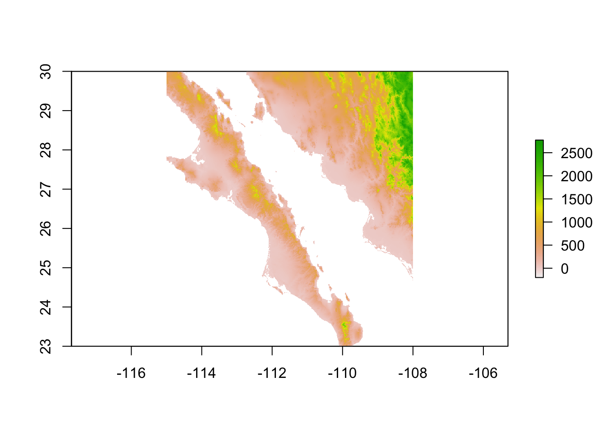

Cropping Rasters
It is often the case that the raster we are working with is not the exact size of the area from which our data are collected. It is a much easier situation if the raster is larger than the area than if you need to stitch together two raster Tiles to get all your data onto one extent. In my doctoral thesis work, the area of the southern Ozark mountains that my sites were in was not only straddling a boundary between existing rasters, it was also at the boundary of two UTM zones! What a pain. Spatial data often consists of very large datasets. One way to minimize the amount of computational resources you are going to use in R is to select only the spatial regions (extents) that you are working in and get rid of the remaining data. This is particularly important if you are going to be doing isolation modeling for genetic connectivity as the cost surface raster needs to be translated into a connectivity network. Data outside your area of interest are unnecessarily taking both resources and time away from your work. To crop a raster, we need to identify the region we wish to keep as an extent object. An extent is a vector of length 4 defined as c(xmin, xmax, ymin, ymax) describing the boundaries of are of interest. Here is an extent for the arapat data set.require(gstudio)
library(raster)
library(gstudio)
data(arapat)
lon.min <- min(arapat$Longitude)
lon.max <- max(arapat$Longitude)
lat.min <- min(arapat$Latitude)
lat.max <- max(arapat$Latitude)
e <- extent( lon.min, lon.max, lat.min, lat.max )
e## class : Extent
## xmin : -114.2935
## xmax : -109.1263
## ymin : 23.0757
## ymax : 29.32541This is the exact boundaries of the data set. However, it is probably a good idea to not have your map cropped exactly to your boundaries but have your most extreme locations plotted within the map boundaries. So I’ll take an approximation (rounding up and down as necessary) to use.
e <- extent( -115, -108, 23, 30 )
e## class : Extent
## xmin : -115
## xmax : -108
## ymin : 23
## ymax : 30This can now be used as the area from within the alt raster that we want to keep.
alt <- raster( "../../data/alt_22.tif" )
bc <- crop( alt, e )
bc## class : RasterLayer
## dimensions : 840, 840, 705600 (nrow, ncol, ncell)
## resolution : 0.008333333, 0.008333333 (x, y)
## extent : -115, -108, 23, 30 (xmin, xmax, ymin, ymax)
## coord. ref. : +proj=longlat +datum=WGS84 +no_defs +ellps=WGS84 +towgs84=0,0,0
## data source : in memory
## names : alt_22
## values : -202, 2774 (min, max)And if we plot it, we see that it is more properly scaled for the region we are interested in working on.
plot(bc)